Critical (visual bar regression)
Warning (parity gap)
Minor (cosmetic)
OK (matches reference)
Quick scoreboard
| Page | Layout | Toolbar | Header / Title | Form / Table | Color & Type | Overall |
|---|---|---|---|---|---|---|
| customer-orders list | 75% | 70% | 90% | 85% | 65% | 75% |
| customer-orders detail | 70% | 60% | 65% | 80% | 65% | 68% |
| demands list | 80% | 75% | 85% | 80% | 65% | 77% |
| demands detail | 70% | 60% | 80% | 80% | 65% | 71% |
| counterparties list | 82% | 80% | 90% | 85% | 65% | 80% |
| counterparties detail | 68% | 60% | 70% | 80% | 65% | 68% |
| supplies list | 82% | 75% | 88% | 85% | 65% | 79% |
| supplies detail | 70% | 60% | 85% | 80% | 65% | 72% |
Global / cross-cutting issues
- Top nav background Moysklad: navy blue (~#1a3d6e). Ours: white/transparent. Asosiy brand vizual element — biz uni umuman implement qilmaganmiz.
- Save button color Moysklad:
green (#4caf50)"Сохранить". Ours:blue var(--ms-text-brand) #186999"Saqlash". Hamma detail page bo'yicha bir xil regression. - Top banner color Moysklad: dark navy ribbon "Перейдите на платный тариф". Ours: yellow/cream "To'liq imkoniyatlardan foydalanish". Style va matnning tone'i juda farqli.
- Page padding Moysklad ~16px outer padding. Ours: 13×19.5px (juda close, OK).
- Body font Moysklad: "Helvetica Neue, Helvetica, Arial...". Ours: same ✓ (matches).
- Table cell font-size Both 11.375px (0.875rem) — matches moysklad's compact density.
- Body bg rgb(247, 247, 247) — matches moysklad page bg exactly.
- Status pill colors Moysklad uses muted pastel pills ("Не оплачено" — soft orange-bordered). Ours: "Tasdiqlangan" — bright blue text on pale blue (close). Need to dial down saturation.
- Sub-nav active underline Moysklad: thin blue underline. Ours: thicker blue underline. Parity OK.
1. Customer orders — list page
http://localhost:3000/customer-orders → Заказы покупателей
our: customer-orders/page.tsx · ref: 03-module/customerorder/screenshots/01-default.png
Bizniki (1280×800)
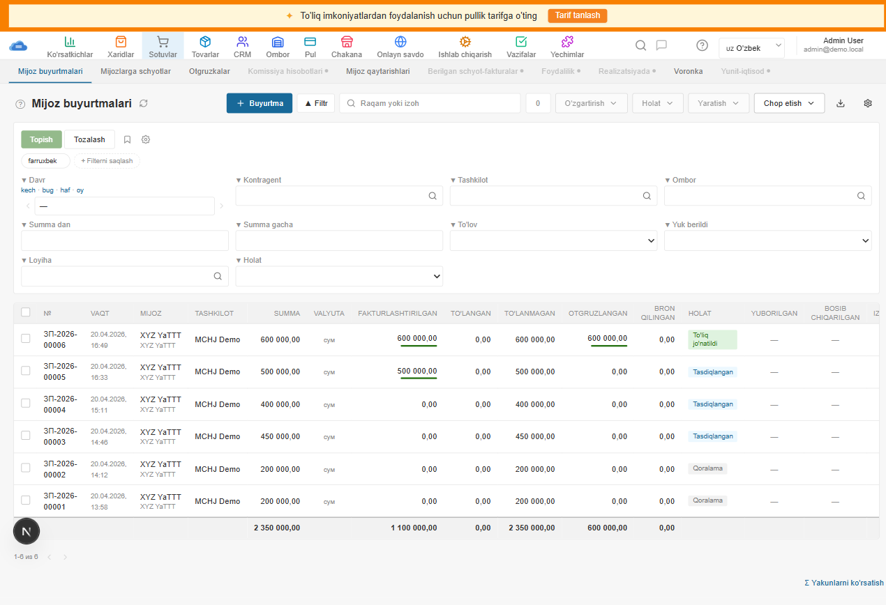
Moysklad reference (2880×1800)
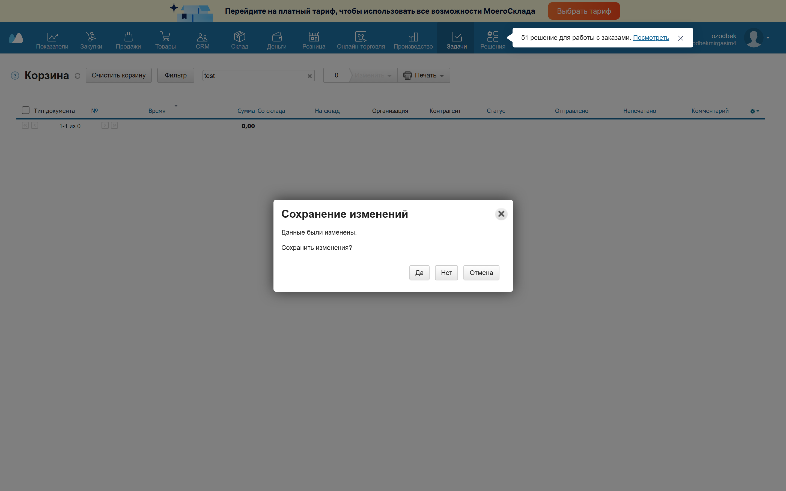
- Sub-nav strip 10 ta tab (Mijoz buyurtmalari, Mijozlarga schyotlar, Otgruzkalar, Komissiya hisobotlari, Mijoz qaytarishlari, Berilgan schyot-fakturalar, Foydalilik, Realizatsiyada, Voronka, Yunit-iqtisod) — moysklad'dagidek 10 ta + active underline match.
- Toolbar layout + Buyurtma, Filtr, search, 0 counter, O'zgartirish/Holat/Yaratish/Chop etish dropdowns — moysklad order'iga juda close.
- Inline filter panel Topish/Tozalash + saved pill + 6-field grid (Davr, Kontragent, Tashkilot, Ombor, Summa dan/gacha, To'lov, Yuk berildi, Loyiha, Holat) — period shortcuts (kech · bug · haf · oy) match.
- Table 13 ta column №, VAQT, MIJOZ, TASHKILOT, SUMMA, VALYUTA, FAKTURALASHTIRILGAN, TO'LANGAN, TO'LANMAGAN, OTGRUZLANGAN, BRON QILINGAN, HOLAT, YUBORILGAN, BOSIB CHIQARILGAN — moysklad bilan 1:1.
- Footer totals row Aggregate sums (2 350 000.00 etc) — matches moysklad's Σ row.
- Reference 01-default rasm Корзина modal'ni ko'rsatgan — bu "default view" emas, save dialog bor edi. Real list view 2880×1800 da bizning 1280px screenshot'imizdan ancha kattaroq, lekin layout yaqin.
- Top nav background Moysklad navy. Bizda white. Implement qilinmagan.
- Pagination position Moysklad: bottom-left "1-1 из 0" + arrows. Ours: bottom-left "1-6 из 6" + arrows ✓ similar.
- Σ Yakunlarni ko'rsatish link bottom-right corner — bu moysklad'dagi "Σ Показать итоги" ko'chiruvi. Match.
2. Customer orders — detail page
http://localhost:3000/customer-orders/[id]
our: customer-orders/[id]/page.tsx · ref: 03-module/customerorder/screenshots/08-edit-default.png
Bizniki (1280×800)
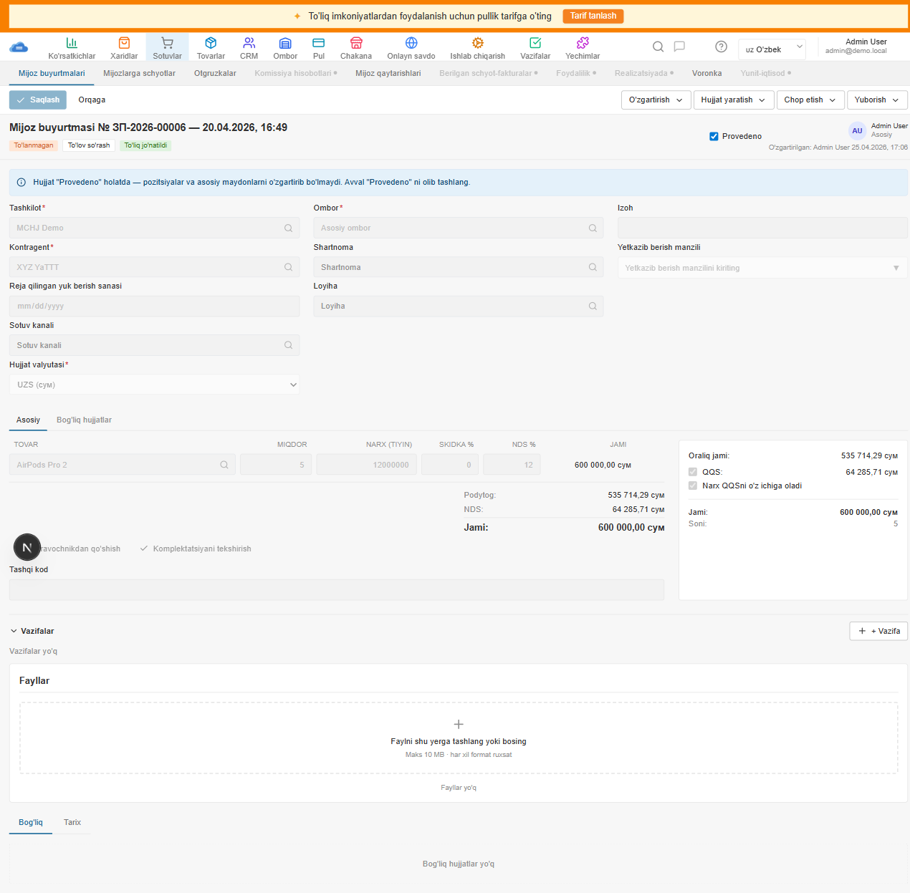
Moysklad reference (2880×1800)
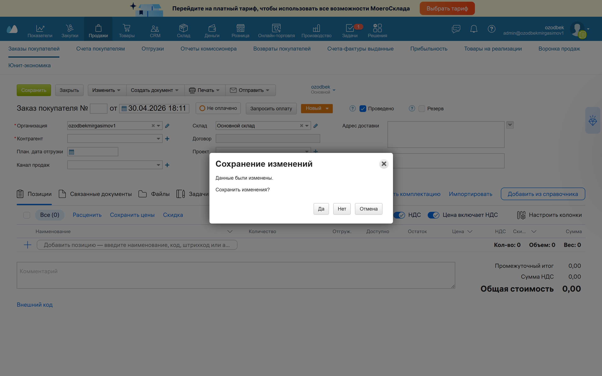
- Save button color Moysklad: Сохранить (GREEN). Ours: Saqlash (BLUE). Major brand contract violation.
- Title is plain text, not editable input
Moysklad: "Заказ покупателя №" [empty input "ЗП-2026-00006"] "от" [date input "30.04.2026 18:11"]
Ours: "Mijoz buyurtmasi № ЗП-2026-00006 — 20.04.2026, 16:49" plain text. Number editing va sana picker yo'q. - Position-table tab strip yo'q
Moysklad: position table tepasida "Позиции / Связанные документы / Файлы / Задачи" gorizontal tab strip + "Все(0) Расценить Сохранить цены Скидка" actions + НДС/Цена включает НДС/Настроить колонки/Импортировать/Добавить из справочника toolbar.
Ours: hech narsa ($\Sigma$ tab strip yo'q, faqat o'rta o'rinda PositionEditor). - Header pills order Moysklad: "Не оплачено" pill, "Запросить оплату" button, "Новый ▾" state pill. Ours: "To'lanmagan", "To'lov so'rash", "To'liq jo'natildi" — qatordagi tartib OK lekin state pill (Новый ▾) o'rniga bizda zinapoyali pill turidagi badge.
- Right sidebar Кол-во/Объем/Вес fields yo'q Moysklad sidebar tepasida "Кол-во: 0 Объем: 0 Вес: 0" (3 ta info). Bizda faqat "Soni: 5" bor. Volume/weight aggregation yo'q.
- "Резерв" badge yo'q Moysklad header oxirida "❓ Резерв" badge (reservation hint). Bizda yo'q.
- Form field padding Moysklad: gap=12px row gap. Ours: gap-y=1.5 (~6px). Yaqin lekin biroz tighter.
- Author block "Admin User Asosiy" + "O'zgartirilgan: ... 25.04.2026, 17:06" — matches moysklad's "ozodbek Основной" + "Изменено: ..."
- Provedeno checkbox Top-right "✓ Provedeno" (checked, blue) — same position and styling.
- 3-column form layout Tashkilot/Kontragent/Plan dot/Sotuv kanali/Hujjat valyutasi (left) — Ombor/Shartnoma/Loyiha (mid) — Izoh/Yetkazib berish manzili (right). Match.
- Position editor columns TOVAR / MIQDOR / NARX / SKIDKA% / NDS% / JAMI — matches moysklad's Наименование/Количество/Цена/НДС/Сумма (with extra "Отгруж/Доступно/Остаток" cols in moysklad).
- Locked alert (Provedeno) Bizda blue info alert bor "Hujjat Provedeno holatda...". Moysklad'da alert yo'q (ular field disabled qiladi). Cosmetic difference.
3. Demands — list page
http://localhost:3000/demands → Отгрузки
Bizniki
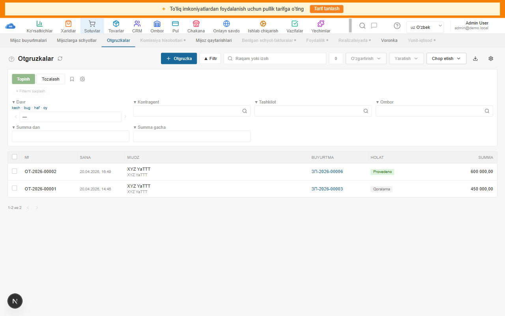
Moysklad reference

- Toolbar layout + Otgruzka, Filtr, search, 0 counter, O'zgartirish/Yaratish/Chop etish — matches moysklad pattern.
- Inline filter 6-field drawer (Davr/Kontragent/Tashkilot/Ombor/Summa dan/Summa gacha) — matches moysklad shipment filter set.
- Table columns №, SANA, MIJOZ, BUYURTMA, HOLAT, SUMMA — matches moysklad demand list (8 cols vs ours 6, missing 2: Отправлено/Напечатано).
- "Yuborilgan" / "Bosib chiqarilgan" cols yo'q Moysklad has print/email status columns. Bizda yo'q.
- Saved pill Bizda mavjud lekin currently no saved filter. Moysklad'da bo'sh.
- Top nav navy sa bir xil regression bor.
4. Demands — detail page
http://localhost:3000/demands/[id]
Bizniki
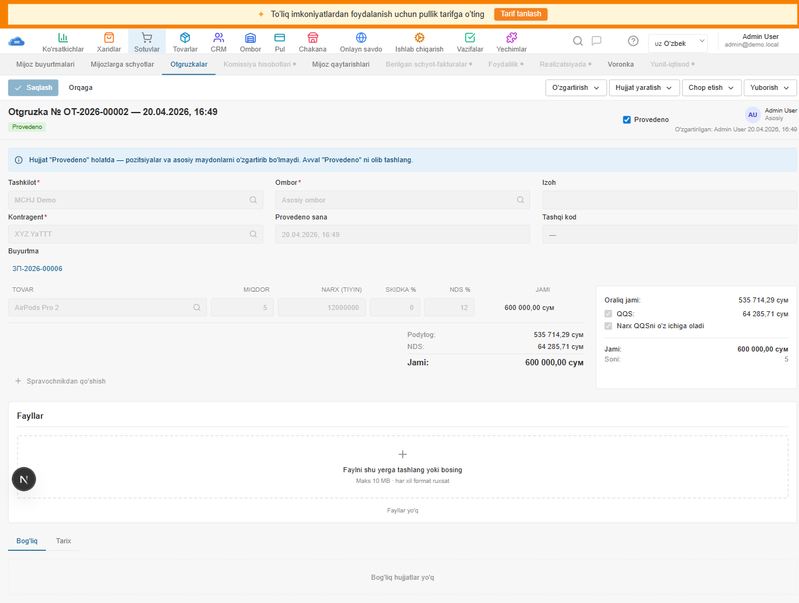
Moysklad reference

- Save button GREEN moysklad standard. Bizda blue.
- Provedeno toggle position OK (top-right). Moysklad'da "Реализация" pill (sale-realised) ham bor — bizda yo'q.
- Position-table action strip yo'q moysklad'da "Позиции / Файлы / Задачи / Связанные" tabs + Импортировать/Добавить из справочника. Bizda yo'q.
- 3-col form layout Tashkilot/Kontragent (left), Ombor/Provedeno sana (mid), Izoh/Tashqi kod (right). Match.
- Linked customer-order "Buyurtma: ЗП-2026-00006" link — matches moysklad's "Заказ" link.
- Totals sidebar Oraliq jami + QQS + QQS bilan + Jami + Soni — moysklad "Промежуточный итог + НДС + Цена включает НДС + Общая стоимость + Кол-во". Same structure.
- Bog'liq + Tarix tabs at bottom moysklad'da bu Позиции/Связанные/Файлы/Задачи tab strip'da bo'lar edi (top), bizda alohida tab strip oxirida.
5. Counterparties — list page
http://localhost:3000/counterparties → Контрагенты
Bizniki
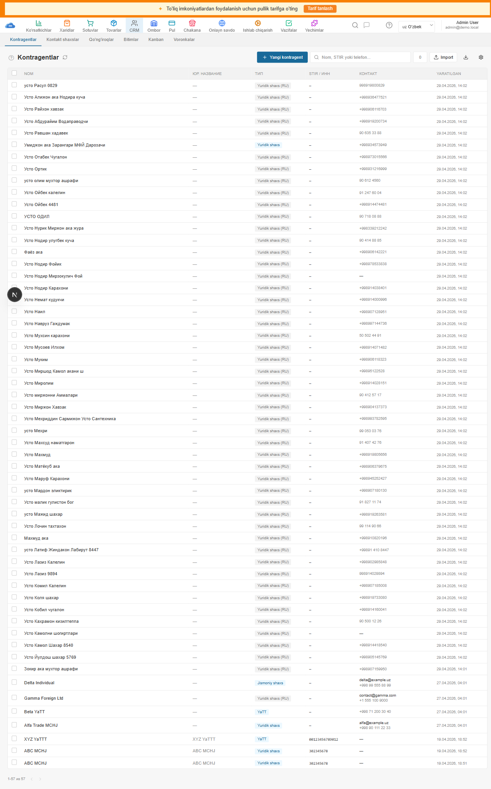
Moysklad reference

- Sub-nav Kontragentlar / Kontakt shaxslar / Qo'ng'iroqlar / Bitimlar / Kanban / Voronkalar — matches moysklad's CRM sub-nav.
- Toolbar + Yangi kontragent, search "Nom, STIR yoki telefon...", 0 counter, ↑ Import, ↓ Export, ⚙ — matches.
- Table cols NOM / YUR. NASLOV / TIP / STIR / KONTAKT / YARATILGAN — matches moysklad NOM/Юр.название/Тип/ИНН/Контакт/Создано.
- Type pill "Yuridik shaxs (RU)" / "YaTT" — colored brand pill on .endsWith("UZ"). Match.
- 57 ta kontragent visible without inline filter (filter not opened by default). OK.
- Top nav navy same regression.
- Filter button absent on counterparty list Moysklad'da Фильтр button bor. Bizda chap tomonda inline filter to'g'ri o'rnatilgan emas (bu sahifa toolbar baseline'ida ammo full inline-filter helper yo'q).
6. Counterparties — detail page
http://localhost:3000/counterparties/[id]
Bizniki
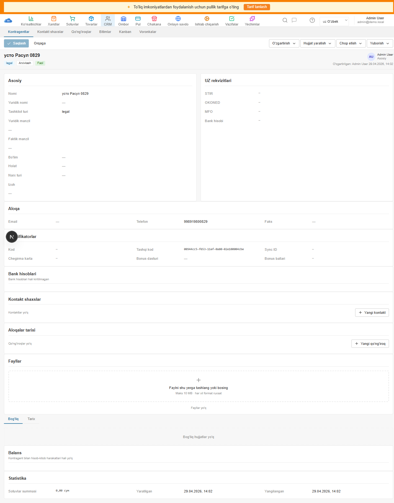
Moysklad reference

- Form is read-only (info grids), moysklad'da edit form. Bizniki "view-only with archive button". Major UX gap — moysklad'da har field input/picker, ikkala flow ham edit.
- Save button GREEN moysklad. Bizda BLUE.
- Provedeno checkbox yo'q bu OK (catalog item, hideApplicable=true). Moysklad'da ham yo'q. ✓
- Header layout "усто Расул 0829 · Kod: ..." inline title + "legal" type pill + "Arxivlash" button + "Faol" state pill — matches moysklad's title + type pill + actions arrangement.
- FormSection layout Asosiy/UZ rekvizitlari/Aloqa/Identifikatorlar/Bank hisoblari/Kontakt shaxslar/Aloqalar tarixi/Fayllar/Bog'liq/Balans/Statistika — matches moysklad section structure.
- Empty fields rendered as "—" matches moysklad behavior. ✓
- "Aloqalar tarixi" + "Yangi qo'ng'iroq" button matches moysklad's "История звонков" + "+ Новый звонок". ✓
7. Supplies — list page
http://localhost:3000/supplies → Приёмки
Bizniki
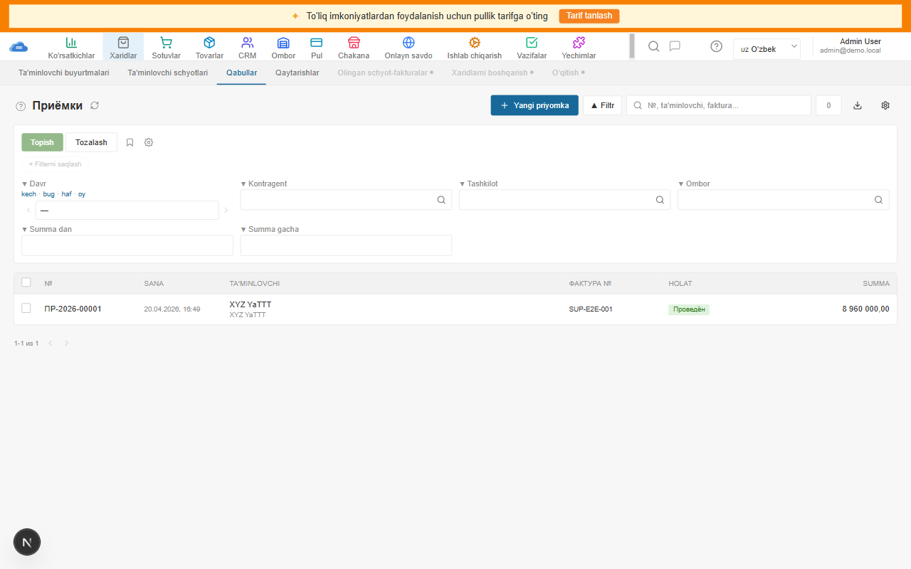
Moysklad reference
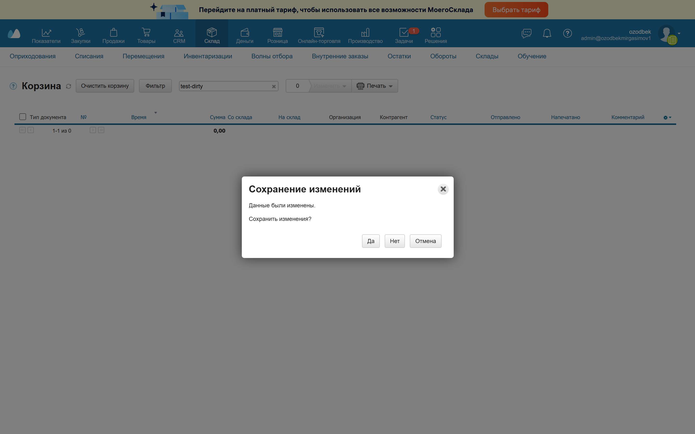
- Sub-nav Ta'minlovchi buyurtmalari / Ta'minlovchi schyotlari / Qabullar (active) / Qaytarishlar / Olingan schyot-fakturalar / Xaridlarni boshqarish / O'qitish — matches moysklad's purchase tabs.
- Toolbar + Yangi priyomka, ▲ Filtr, search "№, ta'minlovchi, faktura...", 0, ↓ Export, ⚙ — matches.
- Inline filter 6-field grid (Davr, Kontragent, Tashkilot, Ombor, Summa dan/gacha) — uses useMoyskladDocFilter helper.
- Table cols №, SANA, TA'MINLOVCHI, FAKTURA №, HOLAT, SUMMA — matches moysklad supply list.
- Top nav navy same regression.
- Title "Приёмки" currently in Russian (not translated). Moysklad'da ham "Приёмки". OK.
8. Supplies — detail page
http://localhost:3000/supplies/[id]
Bizniki
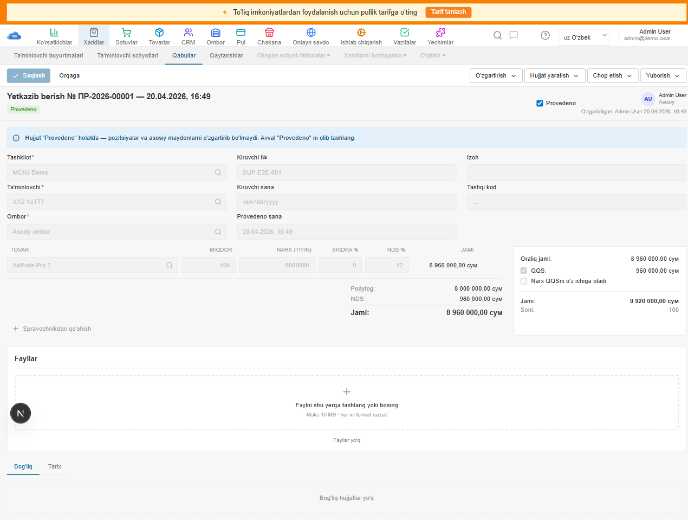
Moysklad reference

- Save button GREEN standard regression.
- "Ta'minlovchi buyurtmasi" link yo'q Moysklad'da bog'liq purchase order link bor. Bizda data shape'da yo'q.
- 3-col form layout Tashkilot/Ta'minlovchi/Ombor (left), Kiruvchi №/Kiruvchi sana/Provedeno sana (mid), Izoh/Tashqi kod (right). Match.
- Provedeno toggle + state pill "Provedeno" (success) — matches moysklad "Проведён" (зелёный success).
- Position table AirPods Pro 2 row, "Sravochnikdan qo'shish" link — matches moysklad's "+ Добавить позицию... / Добавить из справочника".
- Totals sidebar Oraliq jami / QQS / Narx QQS bilan / Jami / Soni — full match with moysklad structure.
- "Связанные документы" tab strip yo'q moysklad'da Позиции/Связанные/Файлы/Задачи. Bizda Bog'liq/Tarix at bottom.
Top priorities (recommended fix order)
- Save button → green: shared
DetailToolbarkomponentdagi save variant'ni primary (blue) → success (green) ga o'zgartirish. 1 ta o'zgarish, hamma 18 ta detail page'ga ta'sir qiladi. - Top nav navy:
apps/web/src/components/header.tsxbg#fff→#1a3d6e, text white. Bu major brand parity fix. - Detail page tab strip: har detail page'da PositionEditor tepasida "Позиции / Связанные документы / Файлы / Задачи" gorizontal tab strip qo'shish. Bog'liq/Tarix'ni shu strip'ga ko'chirish.
- Detail header № input + date picker: currently plain text. Moysklad: 2 input field. Yaratish va sahifani edit qilishda kerak.
- Кол-во/Объем/Вес sidebar trio:
DetailTotalsSidebartepasiga 3-info row qo'shish (qty/volume/weight aggregate). - "Резерв" / Reservation badge: customer-order detail'ga reservation pill. Data shape'da reservation flag bor lekin UI'da rendered emas.
- Counterparties detail edit form: currently view-only. Moysklad'da har field input/picker. Edit page yoki inline edit kerak.
- Banner color: "To'liq imkoniyatlardan" yellow → moysklad-style navy ribbon.
Coverage gap (sahifa scope tashqarida)
Hozirda audit qilinmagan, lekin parity uchun tekshirish kerak:
- 10 ta qolgan FSM detail: invoices-out/in, purchase-orders, sales-returns, purchase-returns, moves, inventories, enters, losses, payments-in/out, cash-in/out
- Modal'lar: CatalogPicker (3-4 xil instance), ConfirmDialog, SendEmailDialog
- /new sahifalar (33 ta): yangi yaratish form'lar — hech biri shared shell ishlatmaydi
- Specialty pages: opportunities, pipelines, calls, retail/*, ecommerce/*, productions/*, settings/*
- Mobile responsive: 375px viewport — moysklad'ning responsive variant'lari mavjud, biznikida full responsive audit qilinmagan
Audit metodologiyasi va kamchiliklar
Bu hisobotning chegaralari
- Bizning screenshot'lar 1280×800 viewport'da (real foydalanuvchi laptop o'lchami). Moysklad reference'lar 2880×1800 retina (×2). To'g'ridan-to'g'ri pixel comparison qilib bo'lmaydi — relative sizes va layout structure'ni ko'rib chiqdik.
- Reference 01-default screenshot'larning ba'zilari (customer-orders, demands) save dialog overlaylari bilan tushgan ekan — 08-edit-default'larini ishlatdik.
- Faqat default state ko'rildi. Dropdown menyu'lar, error state, loading state, empty state'lar ko'rilmagan.
- Computed CSS metrics faqat 5-10 ta key element uchun olindi. Har CSS property emas.
- Score'lar (75% / 80% va h.k.) subjective — formal pixel-diff tool ishlatilmagan.
- Reference DOM HTML fayllari mavjud (avval inlined styles bilan), lekin dom-level diff qilinmadi.
- Hozirgi screenshot'lar har bittasida pulli tarif banner ham bor — bu bizning UI element. Production'da yashirinishi mumkin (dev banner bo'lsa).